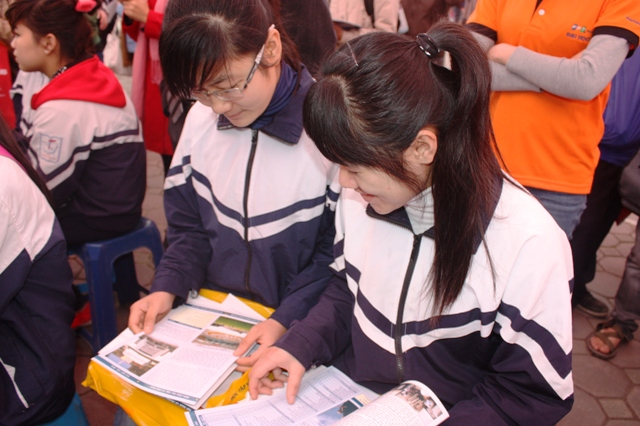

Lưu ý khi ghi hồ sơ ĐKDT vào ĐH, CĐ 2013

Lần cập nhật cuối lúc Thứ ba, 19 Tháng 2 2013 07:57 Viết bởi Administrator Thứ ba, 19 Tháng 2 2013 07:56
(GD&TĐ)-Mẫu phiếu đăng ký dự thi vào ĐH, CĐ năm 2013 có một số thay đổi so với năm 2012, trong đó có bổ sung đối tượng dự thi liên thông, thí sinh cần hết sức lưu ý tránh mắc sai sót.
Hồ sơ dự thi ĐH, CĐ năm 2013 gồm một túi đựng hồ sơ, phiếu số 1 và phiếu số 2.
Với túi đựng hồ sơ: Các thí sinh cần điền đầy đủ các thông tin cần thiết ở mặt trước; mặt sau là một số lưu ý về làm hồ sơ đăng ký dự thi (đây chính là một phiếu ĐKDT và sẽ được gửi đến trường ĐH, CĐ nơi thí sinh ĐKDT).
Mặt trước phiếu số 1có nội dung giống mặt trước của túi đựng hồ sơ, mặt sau gồm các thông tin về tên và ký hiệu các trường ĐH, CĐ.
Mặt trước của phiếu số 2 về cơ bản giống mặt trước của túi đựng hồ sơ, mặt sau là hướng dẫn ghi phiếu đăng ký dự thi.
Khi làm hồ sơ ĐKDT, thí sinh lưu ý:
Nếu thí sinh có nguyện vọng 1 (NV1) học tại trường tổ chức thi thì Mục 3 để trống.
Nếu thí sinh có NV học ở trường không tổ chức thi (hoặc hệ CĐ của các trường ĐH) thì sau khi ghi xong Mục 2 (tên trường có tổ chức thi) - không ghi mã ngành, phải ghi đủ thông tin ở Mục 3. Khối thi ghi ở mục 2 và 3 phải giống nhau.
Thí sinh có NV1 học tại trường ĐH, CĐ không thi tuyển sinh hoặc hệ CĐ của trường ĐH, hoặc trường CĐ thuộc các ĐH, sau khi ghi mục 2 phải ghi thêm mục 3.
Nếu thí sinh dự thi liên thông, đánh dấu "X" vào ô bên phải.
Để hoàn tất hồ sơ, thí sinh cần ghi rõ ngày tháng năm làm hồ sơ, ký tên, dán ảnh 4x6 và có xác nhận của trường (nếu đang là HS, SV) hoặc của công an xã/phường (đối với thí sinh tự do đang cư trú tại địa phương). Cách ghi tương tự đối với phiếu số 1 và phiếu số 2.
Hồ sơ hoàn chỉnh gồm: Túi đựng hồ sơ có dán ảnh và đóng dấu giáp lai, phiếu số 1 và phiếu số 2 (đã điền đủ thông tin). 2 ảnh chân dung cỡ 4x6 kiểu chứng minh thư mới chụp trong vòng 6 tháng (có ghi rõ họ và tên, ngày tháng năm sinh, mã tỉnh/huyện và mã đơn vị ĐKDT vào mặt sau tấm ảnh), 2 ảnh này để trong một phong bì nhỏ. Hai phong bì có dán tem và ghi rõ tên, địa chỉ người nhận (địa chỉ này nên giống với mục 16). Bản sao các giấy chứng nhận hợp pháp nếu là đối tượng ưu tiên (con liệt sĩ, con thương binh...).
Đối với thí sinh có NV1 học tại các trường ĐH, CĐ không tổ chức thi hoặc hệ CĐ của các trường ĐH hoặc trường CĐ thuộc các ĐH, hồ sơ có thêm 1 bản photocopy mặt trước phiếu ĐKDT số 1 (không được đồ hay ghi thêm gì vào bản photocopy này). Bản photocopy này sẽ được các sở GD&ĐT chuyển cho các trường không tổ chức thi cùng với ảnh và địa chỉ đã dán tem sẵn của thí sinh để các trường này có đầy đủ thông tin của thí sinh như những trường tổ chức thi.
itnbk.edu.vn- 23/08/2013 14:23 - Nữ sinh xứ Quảng vinh danh tại ĐH Harvard
- 23/08/2013 09:40 - Chị em Hiền - Hòa
- 23/08/2013 09:33 - Cho những ngày sau
- 17/04/2013 09:21 - Thủ lĩnh trẻ tương lai
- 27/02/2013 08:03 - Tăng cường các biện pháp chống tiêu cực trong Kì t…
- itnbk.edu.vn
- 18/02/2013 08:20 - Giáo dục đạo đức HSSV bằng môi trường văn hóa
- 18/02/2013 08:16 - Giáo dục phổ thông đã có những chuyển biến tích cự…
- 21/01/2013 07:48 - Tạm dừng mở mới ngành Tài chính ngân hàng
- 27/12/2012 20:17 - Nhiều điểm mới trong quy chế thi tốt nghiệp THPT
- 07/12/2012 13:39 - Giáo dục giới tính: Còn nhiều rào cản